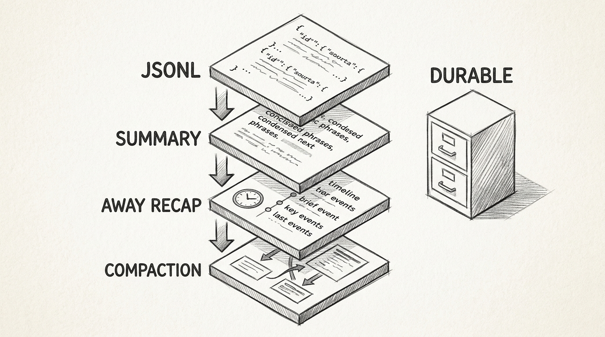
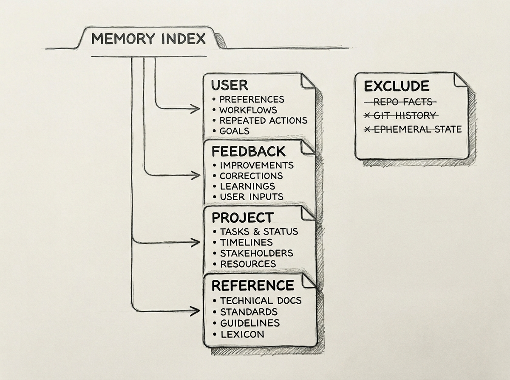
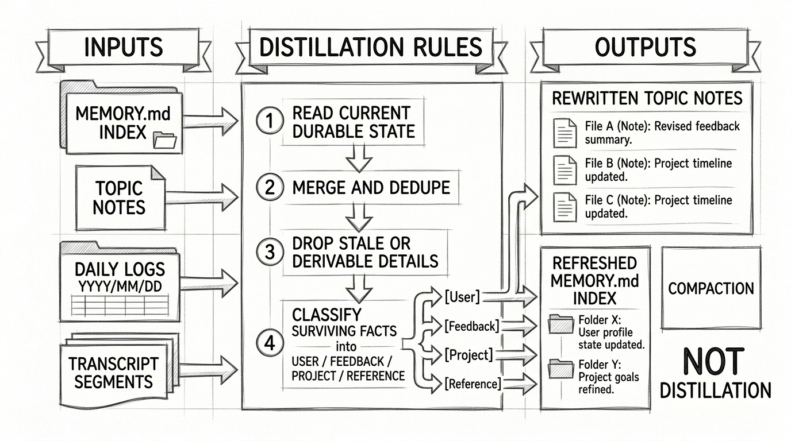
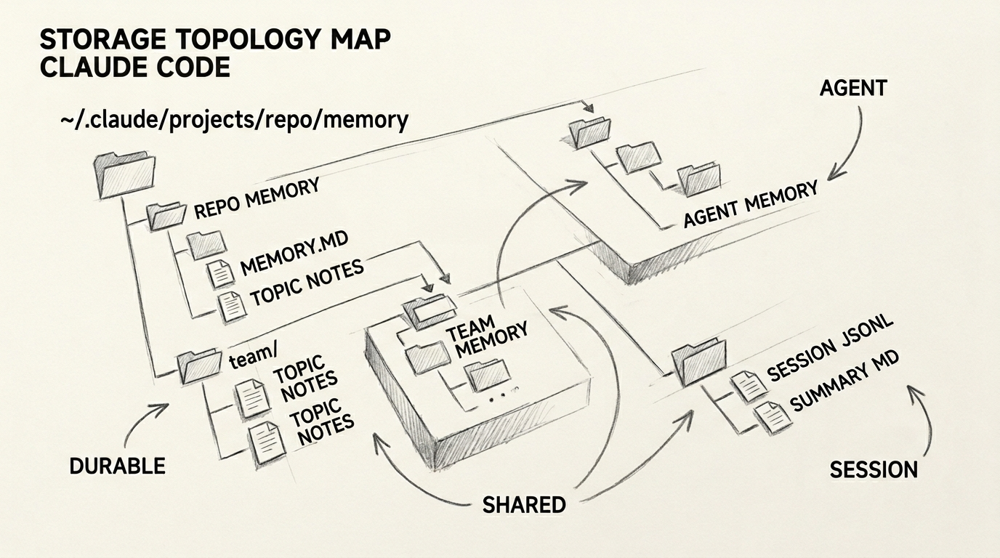
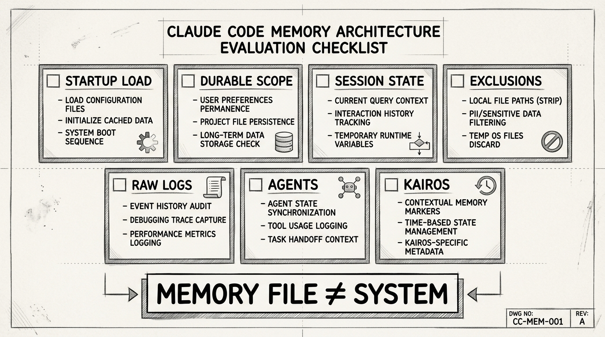
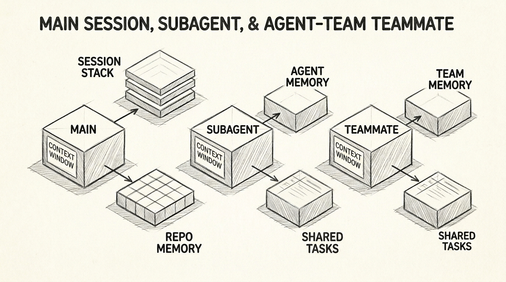

Claude Code Memory System
Claude Code Memory System
You tell Claude Code the same three things in a week. Use the repo-local test command. Stop summarizing diffs. This project freezes merges before release cut.
A month later, one of those facts should feel like policy, one should feel like learned behavior, and one should feel like temporary project state. If all three land in the same bucket, the system gets noisy fast.
That is the real shape of Claude Code memory. It is not one file. It is a layered system with different stores for different jobs.
This post is a technical deep dive into that architecture: what gets loaded at startup, what becomes durable memory, what stays session-local, where those artifacts are stored, how subagents and agent teams fit into the picture, and how a later distillation pass rewrites raw logs and transcript history into durable notes.
The central claim is blunt: the memory file is not the memory.
flowchart TD
H([" Four Layers "])
style H fill:#455a64,color:#fff,stroke:#90a4ae,stroke-width:3px,font-weight:bold,font-size:18px
Most people talk about memory as if Claude Code has one persistent notebook. That picture misses the whole design.
The architecture only makes sense if you separate four jobs.
First, there is the instruction layer. This is where explicit rules live: coding standards, workflow expectations, architecture guidance, and other human-authored constraints. Public documentation exposes this clearly through the CLAUDE.md hierarchy.
Second, there is durable memory. This is the layer that stores non-obvious learnings worth reusing across sessions. It is not supposed to be a giant running diary. It is supposed to be compact enough to load quickly and structured enough to point at deeper notes.
Third, there is session continuity. This is not long-term memory at all. It is the machinery that keeps the current job alive: transcript state, session summaries, away recaps, and compaction artifacts.
Fourth, there is raw capture. In long-running or autonomous work, the system needs a place to dump detail before deciding what deserves to graduate into durable memory.
That promotion step has a name: distillation. Distillation is the later pass that revisits logs and transcript-derived history, keeps what still looks reusable, rewrites topic notes, and refreshes MEMORY.md as a compact index.
Those layers look similar in the UI because they are all “things that persist.” They are not equivalent. They answer different questions.
- Instructions answer: how should the assistant behave here?
- Durable memory answers: what did this assistant learn here that still matters later?
- Session continuity answers: what must survive long enough for the current task to continue?
- Raw capture answers: what evidence should be preserved before distillation decides what survives?
![Hand-drawn pencil sketch technical architecture diagram showing four storage lanes. Left column: Instructions. Center-left: Durable Memory with MEMORY index and topic notes. Center-right: Session Continuity with transcript JSONL, summary markdown, away recap, compaction summary. Right column: Raw Capture with daily logs and transcript segments flowing into distillation. Arrows connect raw capture into durable memory. Clean monochrome pencil schematic on white paper with legible labels and folder icons.](images/four-layer-architecture.jpg)
Once you see those lanes, the rest of Claude Code memory stops looking magical. It starts looking like systems design.
flowchart TD
H([" Where It Lives "])
style H fill:#455a64,color:#fff,stroke:#90a4ae,stroke-width:3px,font-weight:bold,font-size:18px
The fastest way to make this technical is to stop talking about “memory” in the abstract and talk about where Claude Code actually writes things.
Start with the durable layer.
By default, long-term auto memory is stored under your Claude config home in a repo-scoped directory shaped like this:
~/.claude/projects/<canonical-repo>/memory/MEMORY.md~/.claude/projects/<canonical-repo>/memory/<topic>.md
The visible entrypoint is MEMORY.md. The durable body is the set of topic notes beside it. The <canonical-repo> detail matters because worktrees collapse onto the same durable project root rather than creating separate memory trees for each checkout. If team memory is enabled, Claude Code adds a shared subdirectory under the same root:
~/.claude/projects/<canonical-repo>/memory/team/MEMORY.md~/.claude/projects/<canonical-repo>/memory/team/<topic>.md
That is an important design choice. Team memory is not a separate product with a separate persistence model. On disk, it sits under the same repo-scoped memory tree. In runtime behavior, it acts like a synchronized shared memory surface rather than a purely local folder trick.
There is another durable layer for agents. Agent memory is not stored in the same place as the main session’s repo memory. It is scoped per agent type, and Claude Code supports three durable scopes:
- user scope:
~/.claude/agent-memory/<agent-type>/MEMORY.md - project scope:
./.claude/agent-memory/<agent-type>/MEMORY.md - local scope:
./.claude/agent-memory-local/<agent-type>/MEMORY.md
That matters because it tells you Claude Code is not treating every assistant as one blended personality. Agent-specific memory can be isolated at the agent type level, which makes sense for recurring specialist roles.
Now compare that with the short-term layer.
The per-session transcript is stored as JSONL:
<session-project-dir>/<session-id>.jsonl
The short-term session summary sits beside that transcript in a session-specific directory:
<session-project-dir>/<session-id>/session-memory/summary.md
This is not a subtle distinction. Claude Code stores durable memory and session continuity in different places because they are different things. The transcript and summary.md belong to the life of a session. Auto memory and agent memory belong to the life of a repo, a user, or an agent identity.

/memory/ with MEMORY.md, topic notes, and team/ subtree. Upper right shows ~/.claude/agent-memory/This is one of the strongest signs that Claude Code has a real memory architecture and not just a persistence feature. The storage topology itself encodes the product’s opinion about what should survive, for how long, and at what scope.
flowchart TD
H([" What Matters "])
style H fill:#455a64,color:#fff,stroke:#90a4ae,stroke-width:3px,font-weight:bold,font-size:18px
The next technical question is harder than storage: what actually belongs in durable memory?
Claude Code’s memory prompts are opinionated here. Durable memory is not a catch-all scratchpad. It is constrained to four types.
- User memory: role, responsibilities, expertise, preferences, goals
- Feedback memory: how the user wants work approached, what to stop doing, what to keep doing, and why
- Project memory: non-obvious project state that is not derivable from the repo itself — deadlines, freezes, incidents, rationale, constraints
- Reference memory: pointers into external systems such as dashboards, issue trackers, docs, and chat channels
This taxonomy is the technical detail most explanations miss.
It tells you Claude Code’s durable memory is trying to store non-derivable context. That phrase matters. The prompts explicitly exclude facts that can be recovered from the current repo state.
The system is told not to save:
- code patterns, architecture, or file structure that can be re-read from the repo
- git history and who changed what
- fix recipes that already live in code and commit history
- anything already documented in instruction files
- ephemeral task details and current conversation state
Those exclusions still apply even when the user explicitly says “save this.” The durable move is to preserve the surprising or non-obvious part, not the raw activity log.
That exclusion list is not a side note. It is the whole design principle.
A weak memory system saves everything. A strong one refuses to save things that are cheaper and safer to derive from the live state.
The other crucial technical detail is how the durable layer is organized. Claude Code’s durable memory is explicitly a two-step structure:
- write the actual memory into its own topic file
- add a one-line pointer to that file in
MEMORY.md
That means MEMORY.md is an index, not the body. The entrypoint stays compact. The body stays semantically organized by topic. The startup load stays bounded. Public docs reinforce the same constraint from the outside by saying auto memory is loaded at startup only up to the first 200 lines or 25KB.
This is the exact place where the memory system becomes technical rather than metaphorical. If MEMORY.md were the body, the startup cap would be a flaw. If MEMORY.md is the index, the startup cap is the architecture working as intended.

This also answers the question “what matters in memory?”
What matters is not what happened most recently. What matters is what is both non-obvious and reusable.
- A command that is already documented in the repo usually does not belong in durable memory.
- A weird invariant about when that command is safe to run probably does.
- A branch-local debugging trail does not belong in durable memory.
- A repeated user correction about how to explain frontend code to a backend-heavy user probably does.
- A temporary release freeze does belong in project memory for a while, because it changes recommendations even though it is not derivable from the code.
This is why memory quality is editorial. Saving more is easy. Saving the right things is the system design problem.
flowchart TD
H([" Distillation "])
style H fill:#455a64,color:#fff,stroke:#90a4ae,stroke-width:3px,font-weight:bold,font-size:18px
Once you know what belongs in durable memory, the next technical question is how raw capture becomes that durable layer in the first place.
The answer is distillation. Raw capture is not valuable because it exists. It becomes valuable when Claude Code revisits it, filters it, and rewrites it into durable memory that is compact enough to load again.
That rewrite follows a specific shape.
- It reads the current durable surface:
MEMORY.mdplus the topic notes behind it. - It reads the newest raw material: daily logs and transcript-derived history.
- It merges duplicates, drops stale detail, and keeps only facts that still look reusable.
- It rewrites the topic files and then refreshes
MEMORY.mdas a compact index rather than a diary.
That last step is the important one. Distillation does not just append more text. It curates the durable layer so startup loading stays bounded and future sessions get compressed judgment instead of raw sequence.

This is also where people confuse two very different maintenance systems. Compaction protects the active session. Distillation curates the long-term store. One is about surviving the current context window. The other is about deciding what future sessions should inherit.
In the background path, distillation is gated by elapsed time and session activity rather than firing on every compaction event. In the autonomous path, raw logs can keep accumulating while promotion waits for later consolidation. In both cases, the durable memory you see is the output of an editorial pass, not a direct dump of everything that happened.
That is the real memory story. Durable memory is not just written. It is distilled.
flowchart TD
H([" Short Term "])
style H fill:#455a64,color:#fff,stroke:#90a4ae,stroke-width:3px,font-weight:bold,font-size:18px
The short-term stack is where most simplified explanations lose precision.
Claude Code does not use durable memory as a substitute for session continuity. It has a separate session-scoped continuity system, and that system has multiple artifacts.
The first artifact is the transcript JSONL. This is the canonical per-session log of the conversation. It is what resume and replay depend on.
The second artifact is session-memory/summary.md. That file is not generic notes. Its own template is highly structured. It has fields for current state, task specification, files and functions, workflow, errors and corrections, system documentation, learnings, key results, and worklog. In other words, it is not trying to be durable memory at all. It is trying to be a dense technical handoff for the current job.
The third artifact is the away summary. When the user returns after idle time, Claude Code can generate a compact recap based on the recent transcript plus session memory. That recap is not a separate durable file. It is inserted back into the transcript as a system summary message. That is continuity, not durable knowledge.
The fourth artifact is compaction output. When the context window gets compressed, Claude Code replaces large parts of the live conversation with structured compact summaries and boundary markers. Again: continuity, not durable memory.
This stack matters because it explains what the durable layer is not supposed to carry. Durable memory should not have to remember every failed test run, every temporary branch hypothesis, every tool output, or every planning step. The session layer exists precisely so the durable layer can remain selective.
There is another technical detail here that sharpens the picture. Session memory is thresholded. It does not rewrite itself on every turn. It initializes after the conversation gets large enough, then updates after enough additional token growth or enough tool activity. The numbers matter less than the principle: this is a working-memory maintenance system, not a general notebook.

This also explains why people misdiagnose memory failures. They think the assistant forgot something durable, when what really disappeared was session-local state after compaction or interruption. Claude Code separates those concerns. The technical consequence is simple: if you want something to survive as reusable knowledge, it has to earn promotion into the durable layer. Staying in the session stack is not enough.
flowchart TD
H([" Agents Teams "])
style H fill:#455a64,color:#fff,stroke:#90a4ae,stroke-width:3px,font-weight:bold,font-size:18px
The agent story is where memory architecture gets expensive fast.
Public documentation is clear that subagents run in their own context window. That by itself changes the memory story. A subagent does not just borrow a slice of the parent conversation. It gets its own working space, its own prompt, its own tool restrictions, and its own context budget.
That isolation is useful because it keeps heavy exploration and verbose tool output out of the main session. But it also means subagents are not just “threads” inside one memory pool. They are separate workers.
There is an extra nuance here. Claude Code supports both fresh-start subagents and a forked path that can inherit the parent conversation context. Even in the forked case, runtime state is still isolated by default. In other words, inherited context is not the same thing as shared live memory.
Claude Code goes further than that. Subagents can maintain their own persistent memory, and the internal memory layout shows that this memory is scoped per agent type. That is why agent memory lives under agent-specific directories instead of the repo’s main auto-memory tree.
This is a strong product decision. A code-review agent, an architecture agent, and a debugging agent should not automatically write into the same durable identity. They need the option to keep stable guidance scoped to their role.
Agent teams add another level. Public docs describe each teammate as an independent Claude Code worker with its own context window. The lead coordinates, teammates can message each other directly, and the token cost is higher because each worker carries its own context rather than borrowing one shared continuity buffer.
That means agent teams do not solve memory by sharing one giant continuity buffer. They solve parallelism by giving each worker its own continuity lane.
The practical consequence is easy to miss. There are at least three different “shared” stories in Claude Code, and they are not the same.
- Main-session continuity is local to the current session.
- Agent memory can be durable but scoped per agent type.
- Team memory is repo-scoped shared durable memory under the auto-memory root.
- Agent teams are multiple independent sessions that coordinate, not multiple faces of one memory surface.
That distinction matters if you are designing workflows. If you want teammates to share stable repo knowledge, that belongs in the durable shared layer. If you want each specialist to keep role-specific heuristics, that belongs in agent memory. If you want a current task to survive across interruptions, that belongs in session continuity. If you blur those together, the system becomes expensive and incoherent at the same time.
![Hand-drawn pencil sketch technical comparison diagram with three side-by-side columns labeled Main Session, Subagent, and Agent Team Teammate. Each has its own context-window box. The main session connects to repo durable memory and session stack. The subagent has its own context box plus agent-scoped MEMORY path. The team teammate has its own full session box, shared task list, and access to repo/team durable memory but not the parent’s live continuity stack. Monochrome pencil schematic with clear arrows and labels.](images/agent-team-memory-technical.jpg)
This is the technical point that makes the worker model coherent: Claude Code does not have “memory plus helpers.” It has a layered memory system that must keep multiple workers coherent without pretending they are all the same session.
flowchart TD
H([" KAIROS Path "])
style H fill:#455a64,color:#fff,stroke:#90a4ae,stroke-width:3px,font-weight:bold,font-size:18px
The autonomous path is where the earlier distillation model changes shape.
In ordinary operation, durable memory still behaves like a note system. Topic files hold the body. MEMORY.md indexes them. Background extraction can write memories that the main assistant did not write itself.
Autonomous or KAIROS-style operation changes the write contract.
In that mode, new durable observations stop going straight into the memory index flow. Instead, the system switches to a log-first pattern:
- new observations are appended to a daily log under the auto-memory root
- the log path is shaped like
.../memory/logs/YYYY/MM/YYYY-MM-DD.md - the log is append-only
MEMORY.mdremains the distilled index loaded for orientation- later distillation turns log material into topic notes and updates the index
That is a much more serious memory design than “keep a bigger summary while the agent runs longer.” It says autonomous work creates a raw operational trail first and durable knowledge second.
There is another piece behind that pipeline. Claude Code also preserves transcript-derived raw history for later consolidation. Compaction and date change can flush transcript segments into that lane, but distillation itself is gated by elapsed time and session activity rather than by compaction alone. So the autonomous path is not only daily logs. It is daily logs plus transcript-derived raw capture, both feeding later distillation.
There is also a boundary condition worth stating plainly: this log-first path takes precedence over shared team-memory editing. Append-only daily logs and collaborative read-write MEMORY.md flows do not compose into one simple route, so autonomous capture is its own lane rather than just team memory with more turns.
This is the right architecture for long-running work.
A log is good at preserving sequence, ambiguity, partial observations, and evidence. Durable memory is good at fast re-entry, stable recall, and avoiding relearning. An autonomous assistant needs both. If it writes everything directly into durable memory, the index bloats and signal quality collapses. If it never distills anything, the log becomes a perfect record that is terrible to reuse.
The most important nuance is that the architecture is log-first, not log-only. Some auxiliary memory-writing paths still follow the normal note-writing route, and short-term session continuity continues to operate separately through the normal session-memory machinery. So the strongest grounded statement is not “every autonomous memory write goes through logs.” The stronger statement is: the main long-running path clearly introduces a raw-capture stage before durable memory, and that is the architectural shift that matters.

The architectural point is simple. Autonomous mode changes what feeds distillation. It does not make the memory file bigger. It inserts a raw-capture lane in front of the durable layer.
flowchart TD
H([" What To Ask "])
style H fill:#455a64,color:#fff,stroke:#90a4ae,stroke-width:3px,font-weight:bold,font-size:18px
Once the architecture is visible, the right evaluation questions become obvious.
Do not ask whether Claude Code “has memory.” It does.
Ask what kind.
- What is loaded every session before any work starts?
- What is stored as durable memory, and at what scope?
- What is session-local continuity rather than long-term knowledge?
- What gets excluded because it is cheaper to derive from the repo or git?
- What is raw capture waiting to be distilled?
- What promotion rule turns that raw capture into durable notes, and when does that distillation run?
- What changes when work moves into subagents, agent memory, team memory, or agent teams?
- What changes again when autonomous or KAIROS-style work starts writing logs before notes?
Those are technical questions. They force the product to show its storage topology, its promotion rules, and its scope boundaries.
They also explain why the one-file mental model fails. If you imagine one memory file doing everything, Claude Code looks inconsistent. If you treat the system as a layered architecture, the behavior starts to look disciplined.
The instruction layer tells the assistant how to behave. The durable layer keeps non-obvious reusable knowledge. The short-term layer keeps the current job alive. The raw-capture layer preserves detail until distillation decides what should survive.
That is why the title of this post is not rhetorical. The memory file is not the memory. It is one artifact inside a much more technical system.

Claude Code’s real insight is not that it saves more. It is that it separates what must be loaded, what must be remembered, what must only survive the session, and what must stay raw until judgment turns it into knowledge.
The pattern is universal: indexes are for orientation, notes are for durable knowledge, session summaries are for continuity, and logs are for evidence awaiting distillation. Better agent memory is not bigger storage — it is stricter separation of roles.
References
- Anthropic. “Memory.” Claude Code Documentation. https://docs.anthropic.com/en/docs/claude-code/memory
- Anthropic. “Subagents.” Claude Code Documentation. https://docs.anthropic.com/en/docs/claude-code/sub-agents
- Anthropic. “Agent teams.” Claude Code Documentation. https://docs.anthropic.com/en/docs/claude-code/agent-teams
- Anthropic. “Context window.” Claude Code Documentation. https://docs.anthropic.com/en/docs/claude-code/context-window
- Charles Packer et al. “MemGPT: Towards LLMs as Operating Systems.” arXiv, 2023. https://arxiv.org/abs/2310.08560
- Joon Sung Park et al. “Generative Agents: Interactive Simulacra of Human Behavior.” arXiv, 2023. https://arxiv.org/abs/2304.03442
- Hongyu He et al. “MemoryBank: Enhancing Large Language Models with Long-Term Memory.” arXiv, 2023. https://arxiv.org/abs/2305.10250
- Xiangru Wang et al. “Recursively Summarizing Enables Long-Term Dialogue Memory in Large Language Models.” arXiv, 2023. https://arxiv.org/abs/2308.15022
- Nelson F. Liu et al. “Lost in the Middle: How Language Models Use Long Contexts.” arXiv, 2023. https://arxiv.org/abs/2307.03172
- Patrick Lewis et al. “Retrieval-Augmented Generation for Knowledge-Intensive NLP Tasks.” NeurIPS, 2020. https://papers.nips.cc/paper/2020/hash/6b493230205f780e1bc26945df7481e5-Abstract.html
- Martin Fowler. “Event Sourcing.” https://martinfowler.com/eaaDev/EventSourcing.html
- Jay Kreps. “The Log: What every software engineer should know about real-time data’s unifying abstraction.” https://engineering.linkedin.com/distributed-systems/log-what-every-software-engineer-should-know-about-real-time-datas-unifying